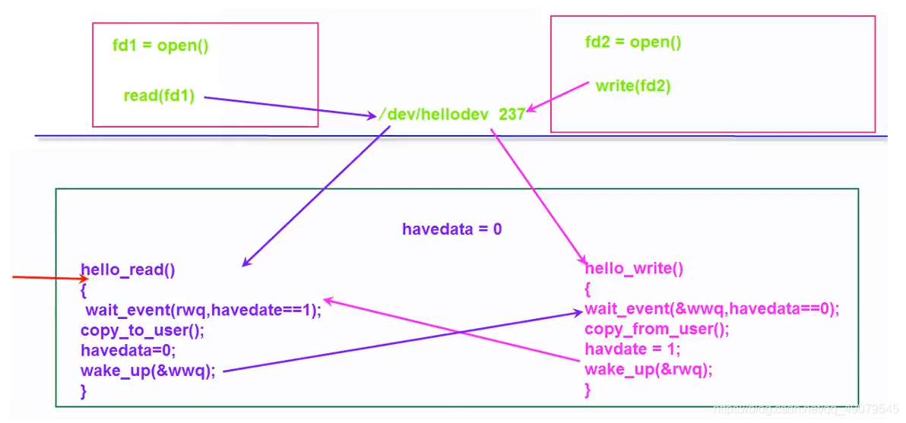
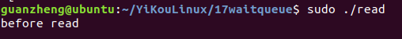
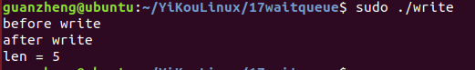
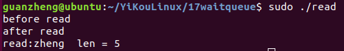
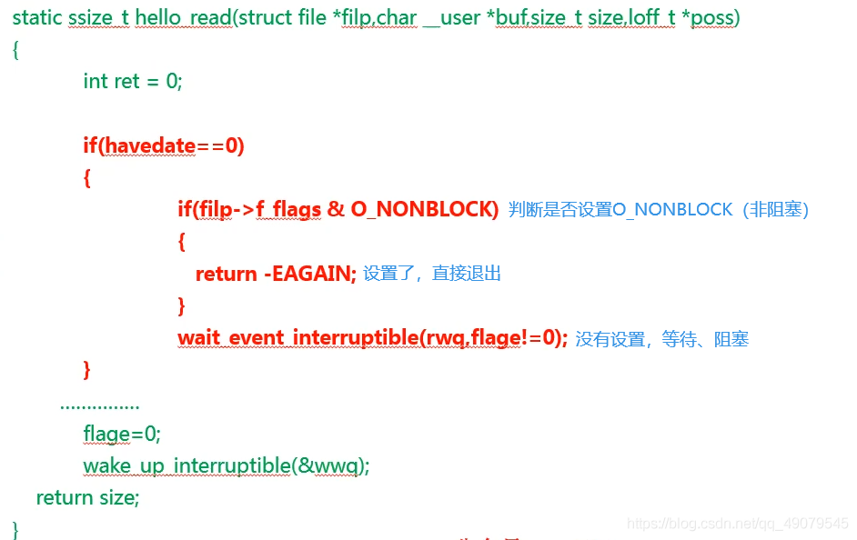

概述
内核模块引用CONFIG实例
参考
完成量 Completion
Completion 用于执行单元等待另一个执行单元执行完成某事，api如下：
// 1. 定义完成量
struct completion my_completion;
// 2. 初始化完成量为0
init_completion(&my_completion);
reinit_completion(&my_completion);
// 3. 等待一个完成量被唤醒
void wait_for_completion(struct completion *c);
// 4. 完成量唤醒
void complete(struct completion *c); // 只唤醒一个
void complete_all(struct completion *c);// 唤醒所有
complete实现的函数如下：
void complete(struct completion *x)
{
unsigned long flags;
spin_lock_irqsave(&x->wait.lock, flags);
x->done++; //这个变量很重要
__wake_up_locked(&x->wait, TASK_NORMAL, 1);
spin_unlock_irqrestore(&x->wait.lock, flags);
}
wait_for_completion实现如下：
void __sched wait_for_completion(struct completion *x)
{
wait_for_common(x, MAX_SCHEDULE_TIMEOUT, TASK_UNINTERRUPTIBLE);
}
EXPORT_SYMBOL(wait_for_completion);
static long __sched
wait_for_common(struct completion *x, long timeout, int state)
{
return __wait_for_common(x, schedule_timeout, timeout, state);
}
static inline long __sched
__wait_for_common(struct completion *x,
long (*action)(long), long timeout, int state)
{
might_sleep();
spin_lock_irq(&x->wait.lock);
timeout = do_wait_for_common(x, action, timeout, state);
spin_unlock_irq(&x->wait.lock);
return timeout;
}
static inline long __sched
do_wait_for_common(struct completion *x,
long (*action)(long), long timeout, int state)
{
if (!x->done) {
DECLARE_WAITQUEUE(wait, current);
__add_wait_queue_tail_exclusive(&x->wait, &wait);
do {
if (signal_pending_state(state, current)) {
timeout = -ERESTARTSYS;
break;
}
__set_current_state(state);
spin_unlock_irq(&x->wait.lock);
timeout = action(timeout);
spin_lock_irq(&x->wait.lock);
} while (!x->done && timeout);
__remove_wait_queue(&x->wait, &wait);
if (!x->done)
return timeout;
}
x->done--; //complete函数里面自加的变量
return timeout ?: 1;
}
发现complete实现的原理是：
通过判断done的值，来判断complete是否执行，执行了多少次。
complete函数执行一次，done就加1
wait_for_completion函数执行一次，done就减1
如果done等于0，那么wait_for_completion函数将一直等待下去。
历程
#include<linux/wait.h>
#include<linux/completion.h>
static int typec_attach_thread(void *data)
{
struct mp2721 *mp = data;
int ret = 0;
bool attach;
pr_info("%s: ++\n", __func__);
while (!kthread_should_stop()) {
wait_for_completion(&mp->chrdet_start);
mutex_lock(&mp->attach_lock);
attach = mp->attach;
pr_info("%s: attach:\n", __func__,attach);
mutex_unlock(&mp->attach_lock);
power_supply_changed(mp->psy);
}
return ret;
}
static void handle_typec_attach(struct mp2721 *mp,
bool en)
{
pr_info("%s: ++ en:%d\n", __func__,en);
mutex_lock(&mp->attach_lock);
mp->attach = en;
complete(&mp->chrdet_start);
mutex_unlock(&mp->attach_lock);
}
static int tcpc_notifier_call(struct notifier_block *nb, unsigned long action, void *noti_data)
{
struct tcp_notify *noti = noti_data;
struct mp2721 *mp = (struct mp2721 *)container_of(nb, struct mp2721, tcpc_nb);
pr_info("mp2721 tcpc_notifier_call, old_state = %s, new_state = %s\n",
typec_status_text[noti->typec_state.old_state],
typec_status_text[noti->typec_state.new_state]);
switch (action) {
case TCP_NOTIFY_TYPEC_STATE:
mp->typec_state = noti->typec_state.new_state;
if (noti->typec_state.old_state == TYPEC_UNATTACHED &&
(noti->typec_state.new_state == TYPEC_ATTACHED_SNK ||
noti->typec_state.new_state == TYPEC_ATTACHED_CUSTOM_SRC ||
noti->typec_state.new_state == TYPEC_ATTACHED_NORP_SRC)) {
pr_info("%s USB Plug in, pol = %d\n", __func__,
noti->typec_state.polarity);
handle_typec_attach(mp, true);
mp2721_set_otg_enable(mp, false);
} else if (noti->typec_state.new_state == TYPEC_UNATTACHED) {
pr_info("%s USB Plug out\n", __func__);
handle_typec_attach(mp, false);
mp2721_set_otg_enable(mp, true);
mp2721_enable_vbus_ovp(mp, true);
} else if (noti->typec_state.old_state == TYPEC_ATTACHED_SRC &&
noti->typec_state.new_state == TYPEC_ATTACHED_SNK) {
pr_info("%s Source_to_Sink\n", __func__);
handle_typec_attach(mp, true);
mp2721_set_otg_enable(mp, false);
} else if (noti->typec_state.old_state == TYPEC_ATTACHED_SNK &&
noti->typec_state.new_state == TYPEC_ATTACHED_SRC) {
pr_info("%s Sink_to_Source\n", __func__);
handle_typec_attach(mp, false);
mp2721_set_otg_enable(mp, true);
}
break;
case TCP_NOTIFY_PD_STATE:
switch (noti->pd_state.connected) {
case PD_CONNECT_PE_READY_SNK:
case PD_CONNECT_PE_READY_SNK_PD30:
case PD_CONNECT_PE_READY_SNK_APDO:
mp2721_enable_vbus_ovp(mp, false);
pr_info("%s PD active\n", __func__);
break;
}
break;
default:
break;
};
return NOTIFY_OK;
}
static int mp2721_charger_probe(struct i2c_client *client,
const struct i2c_device_id *id)
{
init_completion(&mp->chrdet_start);
mutex_init(&mp->attach_lock);
}
等待队列(wait_event)
waitqueue（等待队列）就是内核用于管理等待资源的进程，当某个进程获取的资源没有准备好的时候，可以通过调用add_wait_queue()函数把进程添加到waitqueue中，然后切换到其他进程继续执行。
当资源准备好，由资源提供方通过调用wake_up()函数来唤醒等待的进程。
对于一个进程”睡眠”意味着什么? 当一个进程被置为睡眠, 它被标识为处于一个特殊的状态并且从调度器的运行队列中去除，这个进程将不被在任何 CPU 上调度，因此将不会运行，直到发生某些事情改变了那个状态。 睡眠是“自愿调度”，其实就是将当前进程的状态设置为 TASK_INTERRUPTIBLE 等状态，然后schedule() 让出CPU1，让调度器重新选择一个进程来执行。
堵塞主要就是依赖于等待队列。
定义头文件
#include <linux/wait.h>
定义实例
wait_queue_head_t wq;
init_waitqueue_head(&wq);
定义并同时初始化队列
DECLARE_WAIT_QUEUE_HEAD (wq);
添加和移除等待队列：
void add_wait_queue(wait_queue_head_t *q, wait_queue_t *wait);
void remove_wait_queue(wait_queue_head_t *q, wait_queue_t *wait);
等待操作:
wait_event(simple_queue, simple_flag); // 不可被中断的等待函数
wait_event_interruptible(simple_queue, simple_flag); // 可以被中断的等待函数
wait_event_timeout(simple_queue, simple_flag, timeout); // 不可被中断的超时等待函数
wait_event_interruptible_timeout(simple_queue, simple_flag, timeout); // 可以被中断的超时等待函数
唤醒操作:
wake_up(&simple_queue); // 唤醒所有simple_queue下面挂载的等待任务
wake_up_interruptible(&simple_queue); // 唤醒可以中断的等待任务
实例
以字符设备为例，在没有数据的时候，在read函数中实现读堵塞，当向内核写入数据时，则唤醒堵塞在该等待队列的所有认为: 
#include <linux/init.h>
#include <linux/module.h>
#include <linux/kdev_t.h>
#include <linux/fs.h>
#include <linux/cdev.h>
#include <linux/uaccess.h>
#include <linux/wait.h>
static int major = 237;
static int minor = 0;
static dev_t devno;
static struct cdev cdev;
struct device *class_dev = NULL;
struct class *cls;
wait_queue_head_t rwq;
wait_queue_head_t wwq;
int havedata = 0; //0：empty 1:full
static int hello_open (struct inode *inode, struct file *filep)
{
printk("hello_open()\n");
return 0;
}
static int hello_release (struct inode *inode, struct file *filep)
{
printk("hello_release()\n");
return 0;
}
#define KMAX_LEN 32
char kbuf[KMAX_LEN+1] = "kernel";
//read(fd,buff,40);
static ssize_t hello_read (struct file *filep, char __user *buf, size_t size, loff_t *pos)
{
int error;
wait_event_interruptible(rwq, havedata == 1);//havedata为1时才执行，不为1时休眠等待，等待havedate等于1
if(size > strlen(kbuf))
{
size = strlen(kbuf);
}
if(copy_to_user(buf,kbuf, size))
{
error = -EFAULT;
return error;
}
havedata = 0; //唤醒写进程
wake_up_interruptible(wwq); //唤醒写进程
return size;
}
//write(fd,buff,40);
static ssize_t hello_write (struct file *filep, const char __user *buf, size_t size, loff_t *pos)
{
int error;
wait_event_interruptible(rwq, havedata == 0);//havedata为0才执行
//interruptible：可被打断的
if(size > KMAX_LEN)
{
size = KMAX_LEN;
}
memset(kbuf,0,sizeof(kbuf));
if(copy_from_user(kbuf, buf, size))
{
error = -EFAULT;
return error;
}
printk("%s\n",kbuf);
havedata = 1; //唤醒读进程
wake_up_interruptible(rwq);//唤醒读进程
return size;
}
static struct file_operations hello_ops =
{
.open = hello_open,
.release = hello_release,
.read = hello_read,
.write = hello_write,
};
static int hello_init(void)
{
int result;
int error;
printk("hello_init \n");
result = register_chrdev( major, "hello", &hello_ops);
if(result < 0)
{
printk("register_chrdev fail \n");
return result;
}
cls = class_create(THIS_MODULE, "hellocls");
if (IS_ERR(cls)) {
printk(KERN_ERR "class_create() failed for cls\n");
result = PTR_ERR(cls);
goto out_err_1;
}
devno = MKDEV(major, minor);
class_dev = device_create(cls, NULL, devno, NULL, "hellodev");
if (IS_ERR(class_dev)) {
result = PTR_ERR(class_dev);
goto out_err_2;
}
init_waitqueue_head(&rwq);
init_waitqueue_head(&wwq);
return 0;
out_err_2:
class_destroy(cls);
out_err_1:
unregister_chrdev(major,"hello");
return result;
}
static void hello_exit(void)
{
printk("hello_exit \n");
device_destroy(cls, devno);
class_destroy(cls);
unregister_chrdev(major,"hello");
return;
}
module_init(hello_init);
module_exit(hello_exit);
MODULE_LICENSE("GPL");
//proc/devices
————————————————
版权声明：本文为CSDN博主「关 峥」的原创文章，遵循CC 4.0 BY-SA版权协议，转载请附上原文出处链接及本声明。
原文链接：https://blog.csdn.net/qq_49079545/article/details/119871293
读进程：
读进程：
#include <stdio.h>
#include <sys/types.h>
#include <sys/stat.h>
#include <fcntl.h>
#include <unistd.h>
main()
{
int fd;
int len;
char buf[64]={0};
char buf2[64+1]="peng";
fd = open("/dev/hellodev",O_RDWR);
if(fd<0)
{
perror("open fail \n");
return;
}
printf("before read\n");
len = read(fd,buf,64);
printf("after read\n");
buf[len]='\0';
printf("read:%s len = %d\n",buf,len);
close(fd);
}
写进程：
写进程：
#include <stdio.h>
#include <sys/types.h>
#include <sys/stat.h>
#include <fcntl.h>
#include <unistd.h>
main()
{
int fd;
int len;
char buf[64]={0};
char buf2[64+1]="peng";
fd = open("/dev/hellodev",O_RDWR);
if(fd<0)
{
perror("open fail \n");
return;
}
printf("before write\n");
len = write(fd,buf2,strlen(buf2));
printf("after write\n");
printf("len = %d\n",len);
close(fd);
}
演示效果
首先运行read，由于havedata初始为0，所以阻塞休眠

运行write，read被唤醒，往下执行：
 
如何支持非阻塞
应用层：
fd=open("/dev/hello", O_RDONLY|O_NONBLOCK);
//O_RDONLY、O_NONBLOCK都存在file的f_flags成员里面
内核代码：

与信息量的不同
信息量下导致的阻塞，是需要当一个程序去释放掉信号量时才能唤醒的；wait_event 它的 阻塞和唤醒是完全可控的，这是因为condition是可控的，唤醒也可以由别的程序 控制的。一个是需要释放掉自动唤醒，可以是可控的选择唤醒。
原子操作
原子操作就是指不能再进一步分割的操作，一般原子操作用于变量或者位操作。Linux 内核定义了叫做 atomic_t 的结构体来完成整形数据的原子操作，在使用中用原子变量来代替整形变量。
适用环境： 一般适用于变量或者位操作 如：a=1 给a赋值1 ，在汇编阶段需要好几个操作才能完成赋值工作，在这个阶段中（多核、多线程、三级流水线）容易发生修改。
1)整形操作 API 函数
1)原子整型操作 API
typedef struct {
int counter;
}atomic_t;
函数 |含义 —|—|— ATOMIC_INIT(int i) |定义原子变量的时候对其初始化 int atomic_read(atomic_t *v) |读取 v 的值，并且返回 void atomic_set(atomic_t *v, int i) |向 v 写入 i 值。 void atomic_add(int i, atomic_t *v) |给 v 加上 i 值。 void atomic_sub(int i, atomic_t *v)| 从 v 减去 i 值。 void atomic_inc(atomic_t *v) |给 v 加 1，也就是自增。 void atomic_dec(atomic_t *v) |从 v 减 1，也就是自减 int atomic_dec_return(atomic_t *v) |从 v 减 1，并且返回 v 的值。 int atomic_inc_return(atomic_t *v) |给 v 加 1，并且返回 v 的值。 int atomic_sub_and_test(int i, atomic_t *v)| 从 v 减 i，如果结果为 0 就返回真，否则返回假 int atomic_dec_and_test(atomic_t *v) |从 v 减 1，如果结果为 0 就返回真，否则返回假 int atomic_inc_and_test(atomic_t *v)| 给 v 加 1，如果结果为 0 就返回真，否则返回假 int atomic_add_negative(int i, atomic_t *v) | 给 v 加 i，如果结果为负就返回真，否则返回假
atomic_t b = ATOMIC_INIT(0) //定义原子变量 b 并赋初值为 0
2)位操作API
函数 |含义 —|—|— void set_bit(int nr, void *p)| 将 p 地址的第 nr 位置 1 void clear_bit(int nr,void *p) |将 p 地址的第 nr 位清零 void change_bit(int nr, void *p)| 将 p 地址的第 nr 位进行翻转 int test_bit(int nr, void *p) |获取 p 地址的第 nr 位的值 int test_and_set_bit(int nr, void *p) |将 p 地址的第 nr 位置 1，并且返回 nr 位原来的值 int test_and_clear_bit(int nr, void *p)| 将 p 地址的第 nr 位清零，并且返回 nr 位原来的值 int test_and_change_bit(int nr, void *p) |将 p 地址的第 nr 位翻转，并且返回 nr 位原来的值
3)原子操作实例
struct gpioled_dev{
dev_t devid;
atomic_t lock; /* 原子变量 */
};
static int led_open(struct inode *inode, struct file *filp)
{
if (!atomic_dec_and_test(&gpioled.lock)) {
atomic_inc(&gpioled.lock); /* 小于0的话就加1,使其原子变量等于0 */
return -EBUSY; /* LED被使用，返回忙 */
}
return 0;
}
static int __init led_init(void)
{
int ret = 0;
atomic_set(&gpioled.lock, 1); /* 原子变量初始值为1 */
}
static int led_release(struct inode *inode, struct file *filp)
{
/* 关闭驱动文件的时候释放原子变量 */
atomic_inc(&dev->lock);
return 0;
}
程序解析：
1）led_init 驱动入口函数会将 lock 的值设置为 1
2）open 函数打开驱动设备的时候先申请 lock，如果申请成功的话就表示LED灯还没有被其他的应用使用，如果申请失败就表示LED灯正在被其他的应用程序使用。
每次打开驱动设备的时先使用 atomic_dec_and_test 函数将 lock 减 1，如果 atomic_dec_and_test函数返回值为真就表示 lock 当前值为 0，说明设备可以使用。 如果 atomic_dec_and_test 函数返回值为假，就表示 lock 当前值为负数，那就是其他设备正在使用 LED。其他设备正在使用 LED 灯，只能退出了。 在退出之前调用函数 atomic_inc 将 lock 加 1，因为此时 lock 的值被减成了负数，必须要对其加 1，将 lock 的值变为 0